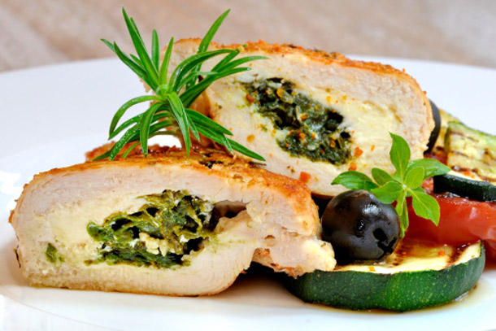

CHICKEN BREAST FILLED WITH SPINACH
- 4.9g|6.6g(net carbs|total)
- 41g protein
- 24g|27%(total fat|sat.)
est.nutritional values per one serving, may vary depending on ingredients used.
INGREDIENTS
- 2 chicken fillets(~ 140g each)
- 1/2 shallot,minced
- 1 garlic clove, minces
- fresh baby spinach(~100 g)
- 1.5 tbsp olive oil
- 1 tbsp pine nuts
- 1 tbsp paprika(sweet)
- salt according to taste
DIRECTIONS
Preheat oven to 200°C
Add 1 tbsp of olive oil to a pan, bring to med heat.While stirring, cook the shallot, garlic and pine njts for 2-3 mins.Add the spinach and cook for another minutes.
Cut the chicken filets lengthwise,but not all the way through, to get little pouch.Line a baking sheet paper.Lay the chicken on the sheet, fill them up with the spinach mis & spice with salt,pepper and parika. Drizzle 1/2 tbsp of olive oil on top of the closed pouches.
Cook in the oven for ~25 min, until chicken is cooked through, but still tender.